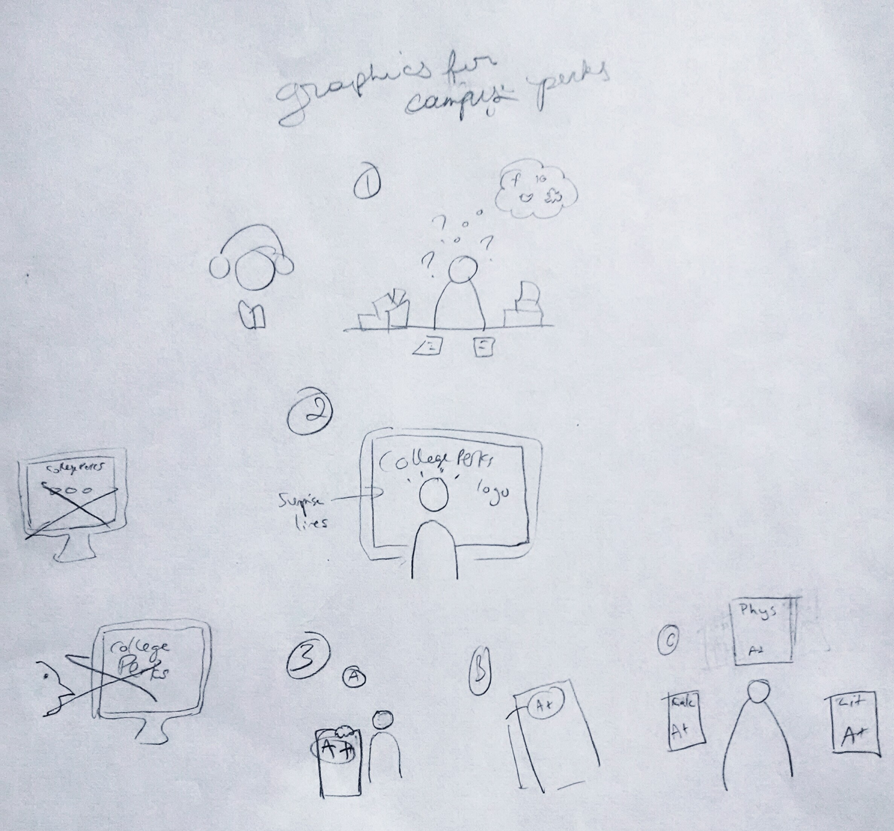

Creating visuals and a landing page for Campus Perks, an on-demand tutoring platform.
Our service was dedicated to matching students who need tutoring with other students who had previously taken the class. We set out to make the webpage eye-catching, while streamlining the user flow of the product and setting ourselves apart from other tutoring services available.
Target users were college students in NYC-area colleges and universities. They were chosen based on the founder's experiences in higher education and in the common issue students face of finding an on-campus tutor on short notice.
I worked alongside 2 web developers, one of whom was the founder of CampusPerks. We all worked together to hash out the details of the app. I was responsible for the visuals and the front end of the site
Roles:
Our biggest constraint was an undefined problem. The founders started out by planning to do a full product release, before realizing that more research was necessary in order to fine-tune the early product properly.
After deliberation, we decided to create a landing page to showcase the product and generate interest, rather than release the minimum viable product right out of the gate.
In order to set our site apart from those of the other tutoring services available, we needed striking visuals and copy.
I researched two other on-demand tutoring services - Sesh Tutoring and KramTutors - that launched around the same time as CampusPerks. Sesh used a red palette, while KramTutors used blue, so I chose a green palette to set CampusPerks apart. I also chose green to instill a sense of calm and to subconsciously reinforce CampusPerks' standing as a college-centered product (green → ivy → Ivy League → academic excellence → our service!).
I also created a series of minimal vector illustrations to walk the user through how the product works. I made sure to keep the user represented in each image to emphasize how they interact with each of the different steps.

Early illustration sketches
We chose to integrate a video background, which I put together and optimized for web. It was important to showcase diverse scenes of students both studying and enjoying campus life.
I built the front end of the site using Bootstrap, then handed it over to the developer, who converted the site into a Rails app and integrated the MailChimp API so that interested users could sign up.